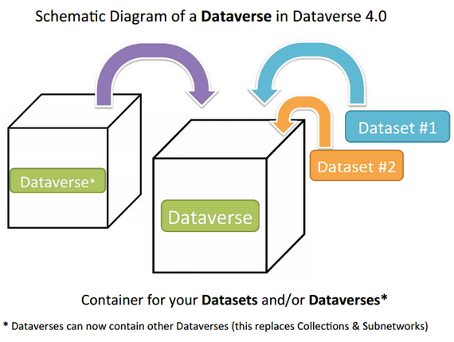

Déposer ses données
1. Qu’est-ce que déposer ses données ?
Lorsque vous avez produit un jeu de données, vous avez la possibilité de le valoriser en tant que ressource autonome. Le temps et l’effort investis dans la création de ces données peuvent être reconnus à travers le système de citations ou de reconnaissance par les pairs, surtout si vous déposez ces données dans un entrepôt reconnu. Cela permet non seulement de partager des données numériques mais aussi, potentiellement, de les lier à des publications associées.
Le dépôt de données présente des avantages non seulement pour le chercheur ou l’équipe de projet, mais aussi pour la communauté scientifique dans son ensemble, en améliorant la connaissance du patrimoine de données existant, toutes disciplines confondues. Cela aide également à éviter la duplication inutile des efforts de recherche, car il informe clairement qui travaille sur quoi et qui possède quelles données.
Les fonctions principales d’un entrepôt de données incluent le dépôt, la description, la conservation, le référencement, la diffusion, et la recherche de jeux de données. Une grande diversité de données peut être déposée, qu’elles soient liées à un article, un projet de recherche, ou qu’elles concernent des domaines spécifiques comme la géographie, l’économie, ou le climat. Par exemple, après une enquête, il est possible de déposer un tableur résumant les variables et résultats d’intérêt ainsi que les questionnaires utilisés pour obtenir ces résultats. L’objectif du dépôt est de permettre aux autres chercheurs de s’approprier et de reproduire les données de manière autonome, grâce à une documentation complète qui explique comment les données ont été produites.
Tableau 6. Avantages collectifs et individuels liés au dépôt d’un jeu de données
| Avantages collectifs | Avantages individuels |
|---|---|
|
|
Les données déposées doivent également répondre aux principes FAIR (Facile à trouver, Accessible, Interopérable, Réutilisable) :
Tableau 7. FAIRiser les données déposées (Wilkinson et al. 2016). Traduis de l’anglais au français par nous-même.
| Les principes FAIR appliqués au dépôt des données |
|---|
Pour être trouvable : F1. Les (méta)données se voient attribuer un identifiant unique et persistant à l’échelle mondiale F2. Les données sont décrites avec des métadonnées riches (définies par R1 ci-dessous) F3. Les métadonnées incluent clairement et explicitement l’identifiant des données qu’elles décrivent F4. Les (méta)données sont enregistrées ou indexées dans une ressource consultable Pour être accessible : A1. Les (méta)données sont récupérables par leur identifiant en utilisant un protocole de communication standardisé A1.1 Le protocole est ouvert, gratuit et universellement implémentable A1.2 Le protocole permet une procédure d’authentification et d’autorisation, lorsque nécessaire A2. Les métadonnées restent accessibles, même lorsque les données ne sont plus disponibles Pour être interopérable : I1. Les (méta)données utilisent un langage formel, accessible, partagé et largement applicable pour la représentation du savoir. I2. Les (méta)données utilisent des vocabulaires qui respectent les principes FAIR I3. Les (méta)données incluent des références qualifiées à d’autres (méta)données Pour être réutilisable : R1. Les (méta)données sont richement décrites avec une pluralité d’attributs précis et pertinents R1.1. Les (méta)données sont publiées avec une licence d’utilisation des données claire et accessible R1.2. Les (méta)données sont associées à une provenance détaillée R1.3. Les (méta)données répondent aux normes communautaires pertinentes au domaine |
2. Quels entrepôts de données ?
Il est important de différencier les entrepôts de données qui disposent d’un système de curation de ceux qui n’en disposent pas. La curation des données implique une gestion active et une maintenance qui peuvent inclure la vérification de la qualité, l’organisation et l’amélioration de l’accessibilité des données. Les entrepôts avec curation sont souvent plus valorisés, surtout par les revues académiques, car ils garantissent un niveau de qualité et de fiabilité plus élevé.
Par exemple, lors de la publication d’un article de recherche, certaines revues exigent que les données sur lesquelles se base la recherche soient déposées dans des entrepôts spécifiques reconnus pour leur curation. Des revues de data paper par exemple, telles que ‘Data in Brief’ ou ‘Scientific Data’, peuvent préférer ou même exiger que les données soient hébergées dans des entrepôts certifiés, comme ceux qui sont accrédités par CoreTrustSeal, un standard qui atteste de la qualité de gestion des données.
- La curation des données
-
A la charge de l’entrepôt de données, il s’agit pour lui d’effectuer un contrôle qualité sur chaque jeu de données déposé, par un ou plusieurs “curateurs”. La curation est gratuite. La qualité des données repose sur le respect des principes FAIR (est-ce que mes données déposées respectent ces 4 principes au mieux ? Comment faire pour améliorer cela ?).
Tableau 8. Exemples d’entrepôts de données avec et sans curation
| Entrepôts de données sans curation | Entrepôts de données avec curation |
|---|---|
Zenodo Nakala Re3data (Registry of Research data Repositories) DOAR ICPSR (Inter-University Consortium for Political and Social Research) |
Harvard Dataverse DataSuds : entrepôt de l’IRD. RechercheDataGouv : en France. Entrepôt INRAE |
3. Quelles données ?
En adhérant aux principes de la science ouverte, il est essentiel de privilégier l’utilisation de formats de données ouverts, libres ou pérennes. Ces formats permettent d’éviter la dépendance à un logiciel spécifique qui pourrait devenir obsolète, garantissant ainsi l’accessibilité et la réutilisabilité des données à long terme. Revoir le tableau 1 sur les formats.
Les données déposées dans un entrepôt peuvent être sujettes à des mises à jour ou à des modifications, qui sont suivies par un système de gestion de version. Par exemple, après trois modifications d’un jeu de données, l’entrepôt indiquera que la version actuellement accessible est la version 3.
Un entrepôt de données peut publier différents types de contenus :
Des données de recherches brutes ou élaborées : Cela inclut les données originales collectées lors d’expériences ou d’études, ainsi que les données qui ont été traitées ou analysées pour en extraire ou en déduire de nouvelles informations.
Des métadonnées : Les informations qui décrivent les données de recherche, telles que le contexte de leur collecte, la méthode utilisée pour les obtenir, et les paramètres de configuration. Ces métadonnées sont cruciales pour permettre la compréhension et la réutilisation des données de recherche par d’autres chercheurs. Publier uniquement les métadonnées peut avoir un intérêt pour sélectionner les personnes qui peuvent avoir accès au jeu de données, tout en permettant à la communauté scientifique d’être au courant de l’existence de ces données.
Codes et logiciels : De nombreux entrepôts permettent également le dépôt de codes informatiques et de logiciels utilisés ou développés dans le cadre de la recherche, facilitant ainsi la reproduction des résultats et la transparence des analyses.
Ces pratiques dans les entrepôts de données non seulement renforcent la transparence scientifique mais augmentent également l’impact et la portée des recherches en permettant à d’autres chercheurs de comprendre, réutiliser et construire sur les travaux existants.
4. Traiter ses données : l’importance du nettoyage / de la restructuration
Les données ne s’utilisent jamais brutes, elles sont toujours retravaillées, restructurées. Cette restructuration peut être légère, ou peut au contraire nécessiter un important travail. Plusieurs outils existent : Python, SQL, R, OpenRefine…
Nettoyer et restructurer les données avant de les déposer dans un entrepôt de données sont des étapes cruciales pour maintenir la qualité des données à un niveau qui soutient les objectifs organisationnels et assure que l’entrepôt de données sert de source fiable. Quelques points cruciaux :
Fiabilité : Nettoyer les données garantit qu’elles sont exemptes d’erreurs, d’incohérences, ou de valeurs manquantes, ce qui augmente la fiabilité et la précision des analyses ultérieures.
Efficacité : Les données propres et bien structurées permettent des analyses plus efficaces et fiables. Cela facilite l’extraction de renseignements utiles et la prise de décisions éclairées basées sur ces données.
Interopérabilité : Des données bien structurées et normalisées facilitent l’interopérabilité avec différents systèmes et applications, permettant ainsi une plus grande flexibilité dans leur utilisation.
Conformité réglementaire : Dans de nombreux cas, nettoyer et structurer les données conformément aux normes établies est nécessaire pour répondre aux exigences réglementaires ou légales de confidentialité et de sécurité des données.
Stockage : En éliminant les redondances et en structurant correctement les données, l’espace de stockage peut être utilisé de manière plus efficace, réduisant ainsi les coûts et améliorant les performances des systèmes de gestion de données.
5. Un entrepôt curateur : DataSuds (IRD)
DataSuds est un entrepôt issu de l’application “Dataverse”. Beaucoup d’autres entrepôts sont issus de cette application comme par exemple RechercheDataGouv ou Dataverse Harvard. C’est un logiciel Open Source, gratuit, développé depuis 2006 par l’Université de Harvard.
- Ne pas se laisser piéger par le terme “Dataverse”, il peut avoir plusieurs sens
-
Ce terme désigne plusieurs réalités qu’il faut distinguer : c’est à la fois l’application qui héberge DataSuds, mais c’est également le nom donné à des dossiers dans cette application. Un dossier peut comporter plusieurs dossiers (ou sous-dossiers). Il suffit alors de traduire “dossiers” par “dataverse” ici. Ainsi, un dataverse peut englober plusieurs dataverses, ce sont des rubriques en ce sens.
Graphique 1. Dataverse [tdl.org]

Graphique 2. Collections et Dataset [guides.dataverse.org]
DataSuds recense les collections de tous les laboratoires affiliés à l’IRD ayant crée un compte. L’UMI SOURCE détient une collection. Chaque unité de recherche est responsable de sa collection. L’UMI SOURCE a donc une équipe d’administrateurs, référents, curateurs… Certains peuvent avoir plusieurs rôles, d’autres peuvent n’en avoir qu’un. Cette équipe est composée de tous les membres actifs du laboratoire volontaires : chercheurs, enseignants-chercheurs, personnels d’appui à la recherche et doctorants.
Répartition des rôles DataSuds
L’équipe référente est en charge à la fois d’accompagner, de réviser, de valider les jeux de données soumis dans la collection de DataSuds.
5.1. Connexion et création d’un compte utilisation
Etape 1
Etape 2
Etape 3
5.2. Créer un jeu de données
Etape 4
Etape 5
Etape 6
Etape 7
5.3. Version provisoire du jeu de données à compléter et valider
Etape 8
Étape 9
5.4. La forme finale du dépôt
Étape 10
Étape 11
Étape 12
Étape 13
6. Références
6.1. Personnes ressources à l’UMI SOURCE
Loïc Pian : loic.pian@uvsq.fr
Alexandre Mathieu : alexmathieu.ln@gmail.com / alexandre.mathieu@universite-paris-saclay.fr
Dominique Couret : dominique.couret@ird.fr
La constitution d’une équipe structurée, regroupant les membres des quatre antennes, est en cours.
Les administrateurs de l’entrepôt DataSuds : data.ird.fr
6.2. Autres ressources
Entrepôt DataSuds : https://datasuds.ird.fr/
Tutoriels de l’INRA :
Création Dataset : https://youtu.be/glN8TVxTRK4
Création Dataverse : https://youtu.be/mYPzZ04JWbY
C’est un autre entrepôt, mais du même mode que DataSuds puisque sur la même application qu’est Dataverse.
- Manuel de Dataverse : http://guides.dataverse.org/en/4.20/user/index.html
- Formations de l’IRD :
- Luc Decker, “DataSuds : Entrepôt de données scientifiques de l’IRD” (2024)
- Luc Decker, Hanka Hensens, Caroline Doucouré, “Déposer des données dans l’entrepôt DataSuds” (2023)